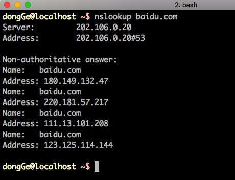

常见网络攻击案例
1. tcp半链接攻击
tcp半链接攻击也称为：SYN Flood (SYN洪水)
是种典型的DoS (Denial of Service，拒绝服务) 攻击
效果就是服务器TCP连接资源耗尽，停止响应正常的TCP连接请求
1.1 正常链接时的情况

1.2 半链接攻击时的情况

2. dns攻击
2.1 dns服务器被劫持
我们知道一个域名服务器对其区域内的用户解析请求负责，
但是并没有一个机制去监督它有没有真地负责。
也就是说域名服务器的权力并没有被关在笼子里，
所以它既可以认真地“为人民服务”，也可以“指鹿为马”。
于是有些流氓的域名服务器故意更改一些域名的解析结果，
将用户引向一个错误的目标地址。这就叫作 DNS 劫持，主要用来阻止用户访问某些特定的网站，或者是将用户引导到广告页面。

2.2 dns欺骗
DNS 欺骗简单来说就是用一个假的 DNS 应答来欺骗用户计算机，
让其相信这个假的地址，并且抛弃真正的 DNS 应答。
在一台主机发出 DNS 请求后，它就开始等待应答，
如果此时有一个看起来正确（拥有和DNS请求一样的序列号）的应答包，
它就会信以为真，并且丢弃稍晚一点到达的应答。

2.3 查看域名解析的ip地址方法
nslookup 域名
例如：
nslookup baidu.com

3. arp攻击